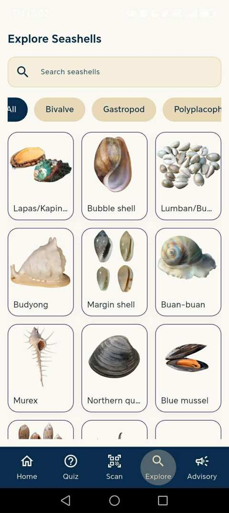

ShelScan mobile app · Explore screenShelScan
A seashell species identification and edibility classification app concept using image recognition. Includes species information, interactive quizzes, and shellfish advisory information.
PythonFlutterTensorFlow LiteFirebase
Mobile app only · View the project preview above